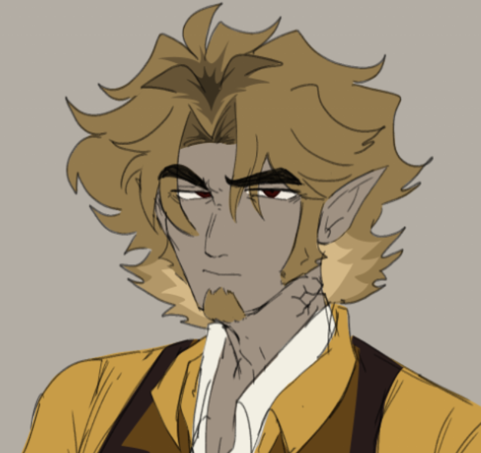
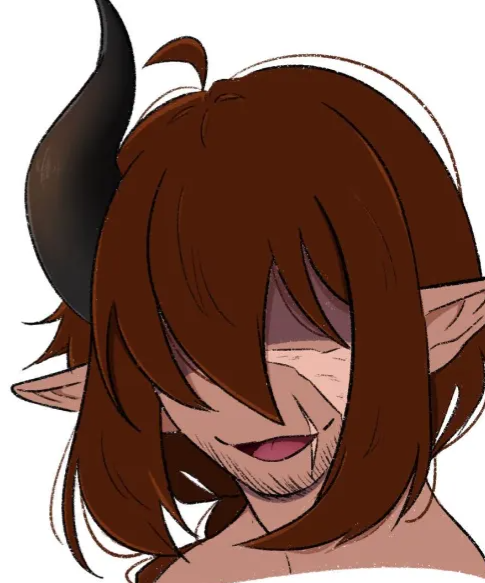
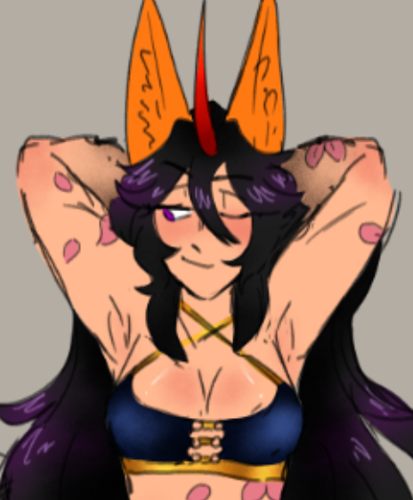
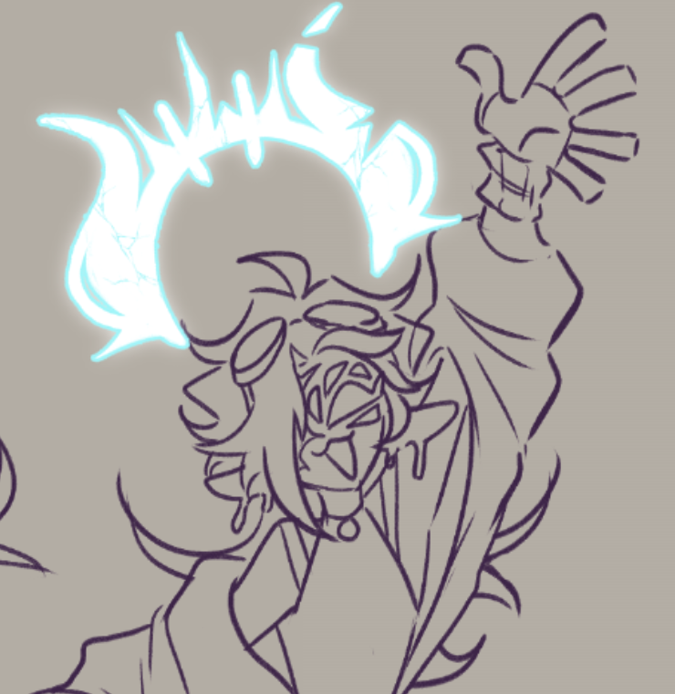

The Guild
Consisting of 5 members, all current mercenaries, watching these 5 fight on the court will certainly be interesting. You can expect a few of them to be messing around, trying to find ridiculous ways to get their opponents out- namely Diesel and Herbie are the goofiest of the bunch while Naomi and Whiskey are the most bloodthirsty. Castle doesn't know why he's here but he's certainly not losing.
Arkin 'Castle' Sinfael

Arkin Sinfael, also known as Castle by his co-workers and strangers alike, is the eldest of the group. He's quite wise with his knowledge of combat. How will this be applied to dodgeball? We will sure find out. Similar to a lot of our members here, they are all deadly in their own right. Either way, he would be the ideal leader for the group. Each person there has some form of respect for him and he's made it this far in life so surely he has done something right?
Kota 'Diesel' Vorago

All members here are troublemakers in their own right but Kota, mainly known as Diesel, likes to stir the pot the most. Often he is accompanied by Herbie during their own missions as bounty hunters so they're a dynamic duo. This will be entertaining to watch but also devastating for the other team.
Herbie

Diesel's best friend and main partner in crime when it comes to shenanigans. The both of them share one braincell and will provide a majority of the entertainment during the match. Likely they will try to get each other out of the game to mess around, or, worse, they will be throwing one another across the court.
Naomi 'Vixen' Tenko

With both her and Whiskey some of the most bloodthirsty on the team, it's fair to assume that they will be going all in with their 'attacks'. If Diesel and Herbie focused on defense while Naomi and Whiskey focused on offense, there would be a sure fire win. Unlike Whiskey, she is cunning and light on her feet.
Whiskey

Far more erratic and energetic than Naomi, she will likely be all over the place. It will take her a bit to get used to the rules, but once she understands them she will be able to excitedly take down their opponents. She will be difficult to avoid and her shots will be fired quickly and likely as a curveball.